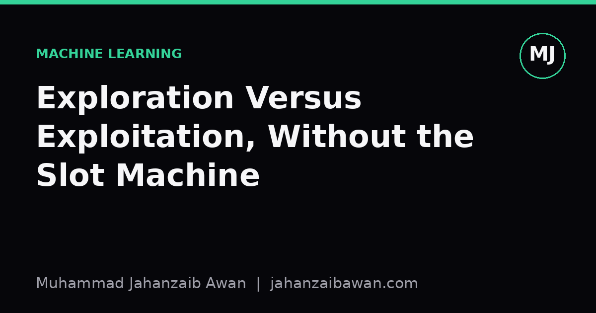
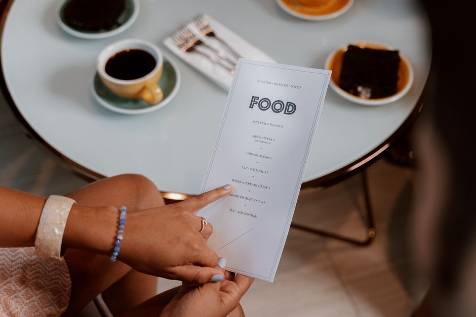

Exploration Versus Exploitation, Without the Slot Machine
A practical look at one of the oldest tradeoffs in decision making, built from a research choice most people actually face.

Why the slot machine metaphor gets in the way
Every introduction to the exploration versus exploitation tradeoff reaches for the same image: a row of slot machines, each with an unknown payout, and a gambler deciding which one to pull next. It is a fine metaphor for building the maths, but it quietly does something unhelpful. It frames the problem as a game of chance played against a fixed, indifferent environment, and it makes the whole idea feel like it belongs to casinos and reinforcement learning papers rather than to ordinary decisions you make every week.
The tradeoff is much simpler and much more general than that. It is about what to do when you must repeatedly choose between options whose quality you only partly know, and every choice you make also teaches you something for next time. That description covers far more of life than gambling does: choosing which supplier to trust, which experiment to run next in a lab, which restaurant to eat at, or which model architecture to keep tuning versus which new one to try.
Once you drop the casino framing, the core question becomes easier to see clearly: do you use your current best information to get the best result you can right now, or do you spend some of your effort finding out whether something better exists that you have not tried yet. Neither answer is ever universally correct, which is exactly why this is called a tradeoff rather than a solved problem.
A worked example with restaurants, not machines
Suppose you move to a new city with twenty restaurants within walking distance. You eat out four times a week, so you have roughly two hundred meals a year to allocate. On night one you try somewhere at random and it is good, a solid seven out of ten. Exploitation says go back there every time: you know it is a seven, and a known seven beats an unknown average. Exploration says try new places, because somewhere in those remaining nineteen restaurants there might be a nine, and you will never find it by sitting still.
Here is where the arithmetic actually matters, because intuition alone tends to overweight one side. If you exploit relentlessly from night one, you lock in roughly two hundred meals at a seven, for a rough lifetime total of fourteen hundred quality-points. If instead you spend your first twenty visits exploring, one per restaurant, you learn the true quality of everywhere nearby at a modest short-term cost, then you spend the remaining hundred and eighty visits at whichever place turned out best. If that best place is a nine rather than a seven, the arithmetic works out close to eighteen hundred quality-points minus the exploration cost, comfortably ahead of pure exploitation, even accounting for a few disappointing meals along the way.
Notice what made exploration pay off here: you had a long horizon, two hundred meals, over which to recoup the cost of learning. If you were only in that city for one week, four meals total, spending three of them exploring blind would very likely be a mistake, because there is barely any time left to cash in what you learned. The horizon length is doing almost all the work in deciding which strategy wins, and that single insight generalises far beyond restaurants.

Why the balance point keeps moving
The restaurant example makes it tempting to think there is a fixed optimal ratio, something like explore for the first ten percent of your time and exploit for the rest. Real problems resist that neatness for two reasons. First, the environment itself can change: a restaurant that was excellent last year might have new management and be mediocre now, which means even a strategy that has converged on a good answer needs to keep spending a small amount of effort rechecking it. Pure exploitation is not just risky early on, it is risky forever in any setting that is not perfectly static.
Second, the cost of a bad outcome is not symmetric across every domain, and this is the part that generic explanations of the tradeoff often skip. Trying an unfamiliar restaurant and disliking the meal costs you one evening. Trying an unproven medical treatment or an unvalidated financial strategy can cost far more than one bad data point, so the acceptable amount of exploration shrinks as the downside of failure grows. Any sensible strategy has to weigh not just how much you might learn, but how much a wrong guess actually costs you, which is why the same mathematical framework produces very different practical advice in a game show versus in clinical trial design.
This is also why methods that adapt their exploration rate over time tend to outperform a fixed rule. Reducing how much you explore as you gain more confidence in your current best option, while never letting it drop entirely to zero, mirrors what a careful decision maker does instinctively: try new things aggressively when you know little, taper off as evidence accumulates, but keep a small standing budget for surprises because the world does not hold still.
The practical takeaway
If you strip away the machinery, the exploration versus exploitation tradeoff reduces to three questions worth asking explicitly whenever you face a repeated choice under uncertainty. How much time or budget do you have left to benefit from anything you learn. How costly is a wrong guess, not just in expectation but in the worst case. And is the underlying situation stable enough that what you learn today will still be true tomorrow.
Answer those honestly and the right balance usually becomes obvious without needing a formula at all. A long horizon with cheap mistakes and a stable environment calls for generous exploration early, tapering as confidence builds. A short horizon, expensive mistakes, or a shifting environment all push you back towards exploiting what you already trust, while keeping a small, permanent allowance for testing whether your trust is still deserved. The slot machine never told you any of that; the arithmetic of your own choices always will.